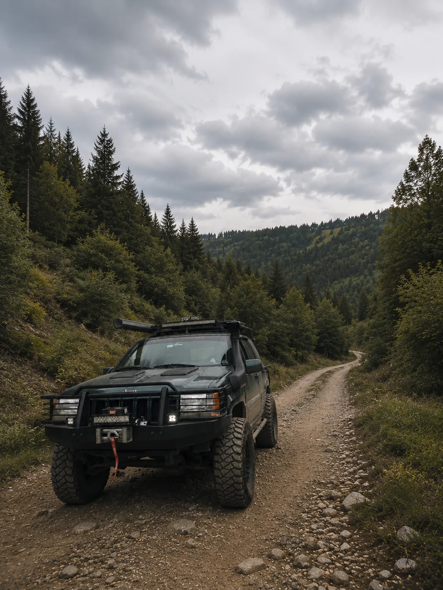
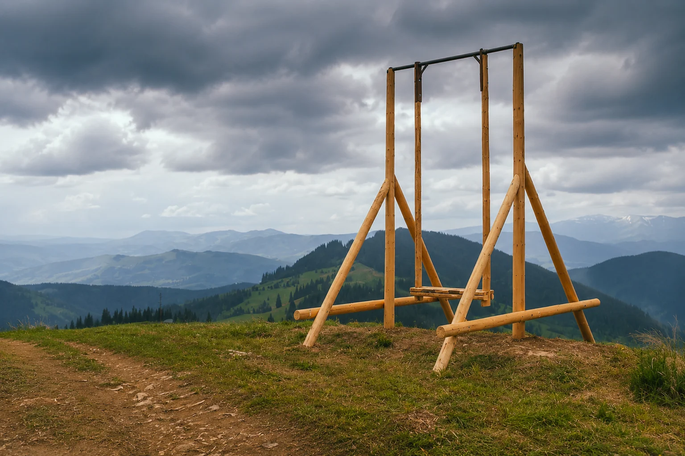
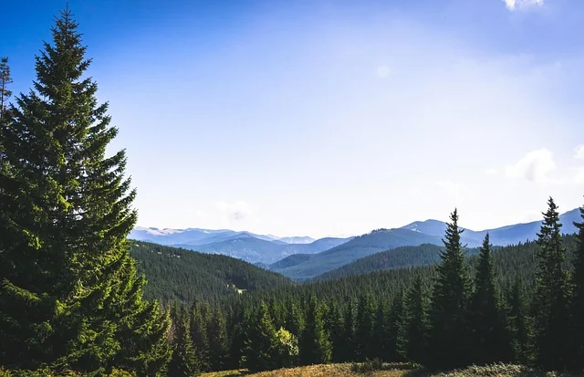
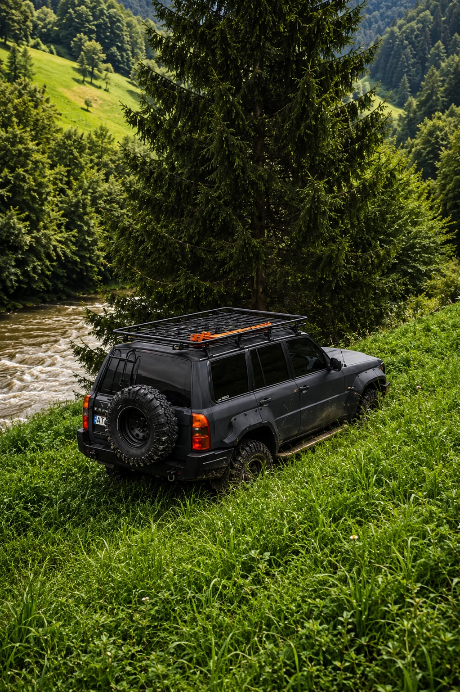

Панорамні точки
Веземо на вершини, полонини і лісові дороги, які не видно зі стандартних туристичних маршрутів.
Старт з Яремче · Татарів · Буковель · Ворохта
Справжні позашляховики, досвідчені гіди, дикі панорами. Маршрути для сімей, пар та компаній — підберемо формат під ваш темп.
Ми проведемо вас маршрутами, які недоступні звичайним туристам — по хребтах, гірських переправах і прихованих панорамах.
Обрати маршрутМи поєднуємо емоції гірської подорожі з чіткою організацією: справні авто, продумані маршрути, інструктаж і супровід.
Веземо на вершини, полонини і лісові дороги, які не видно зі стандартних туристичних маршрутів.
Перед стартом проводимо інструктаж, підбираємо складність і тримаємо темп групи.
До 6 гостей у джипі — більше уваги до деталей і достатньо часу на фото та відпочинок.
На маршруті закладені зупинки для фото, краєвидів, кави в горах і коротких прогулянок.

Їдемо через лісові дороги Яремчанщини, полонини над Татаровом, оглядові точки Ворохти та панорами Чорногори. У маршрутах є місце для тиші, кави в горах і живих історій від місцевого гіда.
Можемо зробити легкий сімейний виїзд до краєвидів або довший маршрут у бік Верховини, Говерли, Хом'яка чи Піп Івана.
Отримати консультаціюКожен маршрут має фото, рівень складності, прозору ціну і зрозумілий сценарій подорожі.

Карпатська панорамаЛегкий джип-тур Карпатами з панорамними видами на Говерлу. Відвідайте карпатську сироварню та зробіть незабутні фото на гірській гойдалці серед мальовничих краєвидів.

Підкорення високогір'яЗахоплива подорож позашляховиком на висоту понад 1400 метрів. Насолодіться неймовірними панорамами Говерли, Петроса, Драгобрата, Хом'яка та Піп Івана.

Гранд Тур КарпатамиМаксимум вражень за одну поїздку. Маршрут об'єднує всі найкращі локації попередніх турів: високогірні панорами, сироварню та наймальовничіші дороги Карпат.
Простий процес без зайвих дій: ми беремо на себе всю організацію.
Ви телефонуєте або пишете, ми уточнюємо дату, кількість гостей і бажаний рівень драйву.
Менеджер пропонує маршрут, ціну, час старту і точку зустрічі.
Збираємося у Ворохті або домовленій точці біля Яремче, Татарова чи Буковелю.
Пояснюємо правила безпеки, посадку, зупинки і поведінку на маршруті.
Їдемо до панорам, робимо фото, короткі прогулянки і зупинки для відпочинку.
Повертаємося у стартову точку, ділимося фото і допомагаємо з наступним маршрутом.
Реальні сцени з маршрутів біля Яремче, Ворохти, Татарова, Буковелю та Верховини.
Ви отримуєте повний організований виїзд, а не просто місце в автомобілі.
Короткі відповіді на те, що зазвичай уточнюють перед бронюванням.
Ні, ви їдете пасажиром з професійним водієм-гідом. Керування автомобілем гостям не передається.
Так, для сімей підбираємо легші маршрути без різких ділянок і з комфортними зупинками.
Є формати на 3, 5 і 8 годин. Також можемо погодити індивідуальну тривалість.
Зручне взуття, теплий шар одягу, воду, заряджений телефон і гарний настрій. У горах погода змінюється швидко.
Так, можемо організувати маршрут тільки для вашої компанії з окремим часом старту.